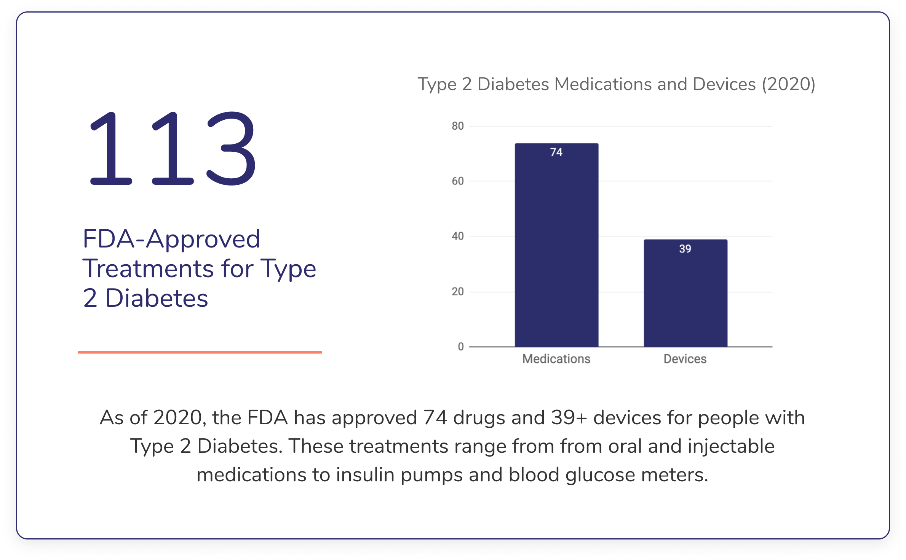
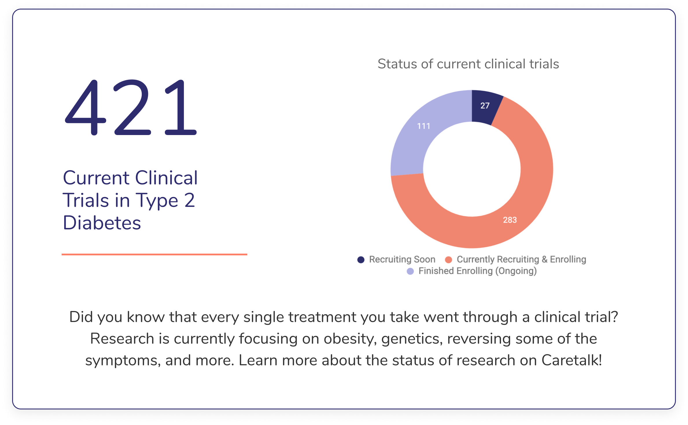

I created these visualizations in collaboration with Spencer Hey, PhD (Harvard Center of Bioethics). These metrics provide users an "all-in-one snapshot" of the status of Type 2 Diabetes in the U.S, as of 2020. We never got to publish them fully on Caretalk, but I'm sharing them here because the world should know how widely this condition impacts peoples' lives.
If you like these, check out the Alzheimer's Disease Data Visualizations. Perhaps you'll be able to see an interactive version soon.
Note: these range from insulin, to insulin pumps, to medications which lower an individual's blood glucose levels. See Caretalk's Treatment Comparison Tool for more information.
Note: This is current as of April 1, 2020. See ClinicalTrials.Gov for the latest.
